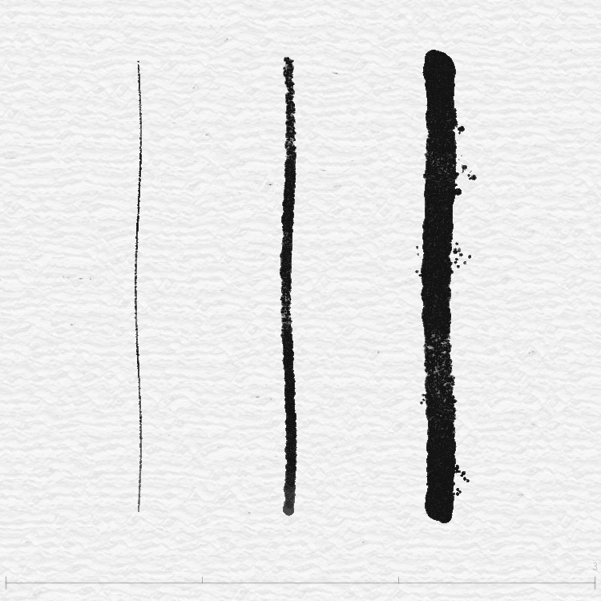
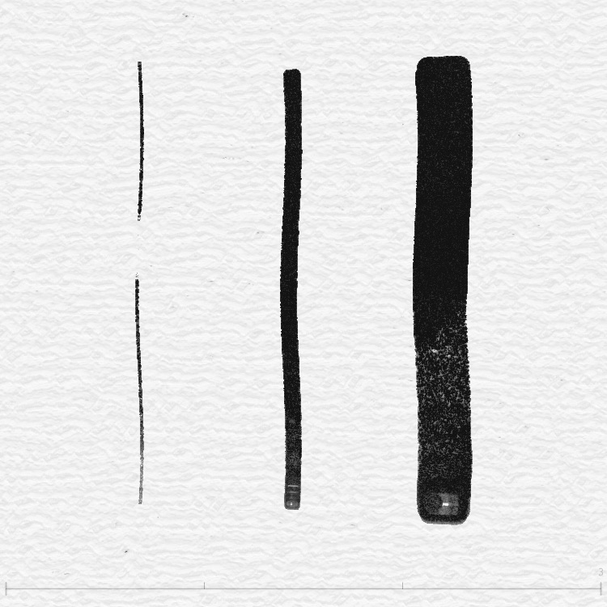
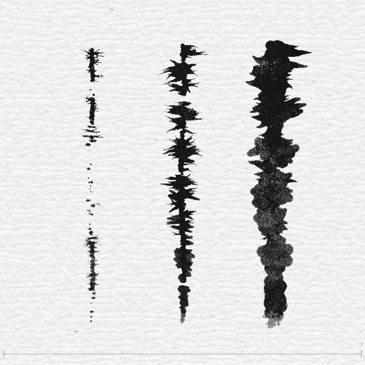
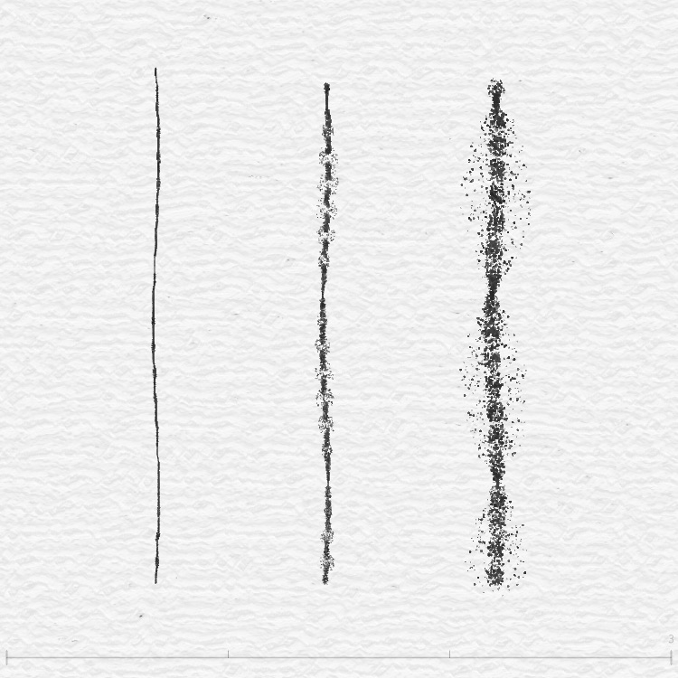
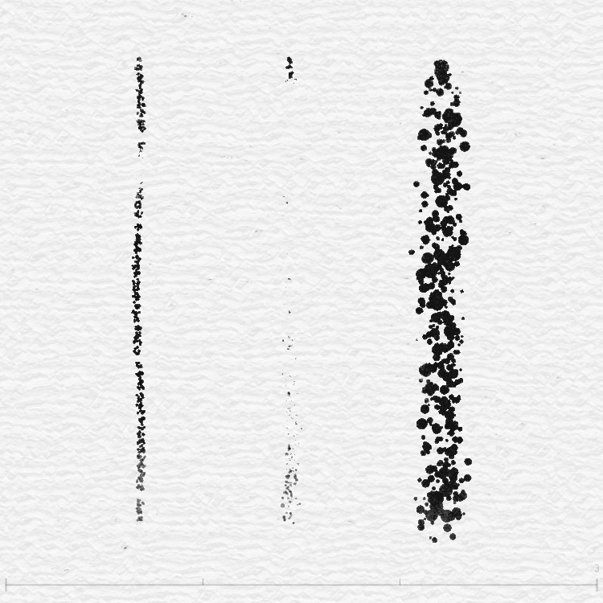
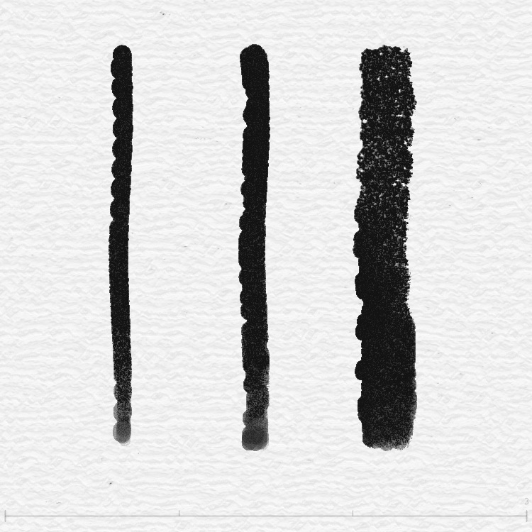
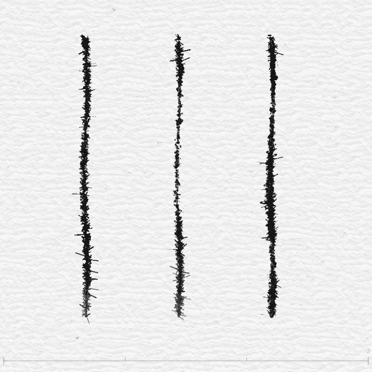

你的滑鼠是一支「彈簧筆」
想像你的滑鼠上面綁了一條 橡皮筋，橡皮筋的另一端連著一支毛筆。
當你移動滑鼠的時候，毛筆不會直接跟上——它會被橡皮筋 拉著走，有一點延遲，有一點彈性。
移動越快，橡皮筋拉得越緊，毛筆就跟不上，畫出來的線條就越 細。
移動越慢，橡皮筋很放鬆，毛筆穩穩地壓在紙上，線條就越 粗。
這就是 InkField 的核心秘密：你的滑鼠和畫筆之間，有一套 物理模擬系統，就像真正的彈簧一樣運作。
物理 三個關鍵角色
滑鼠和畫筆之間用「彈簧」連接。彈簧會拉著畫筆往滑鼠靠近，但同時有「阻力」讓它慢慢減速。這兩個力量一起，就產生了自然的毛筆感覺。
速度與粗細：動越快，線越細
物理 核心公式
整個粗細變化的秘密，藏在這一行程式碼裡：
// brushSizeNow = brushSize - brushSpeed
就這麼簡單！速度越大，減掉越多，線條越細。
讓我們用圖來感受一下：
最粗
speed ≈ 0
中等
speed ≈ 3
較細
speed ≈ 8
極細
speed ≈ 15
這跟真正的毛筆一模一樣！你拿毛筆在紙上 慢慢壓，筆毛會展開，線條很粗。
你拿毛筆 快速一揮，筆毛來不及完全接觸紙面，線條就很細。
這個現象在書法裡叫做「提按」——快 = 提筆（細）、慢 = 按筆（粗）。
速度的計算方式
電腦怎麼知道你移動多快？它看的是「畫筆的加速度」：
加速度X += (滑鼠X - 畫筆X) × 彈力
加速度Y += (滑鼠Y - 畫筆Y) × 彈力
// 2. 加上摩擦力（減速）
加速度X ×= 阻尼
加速度Y ×= 阻尼
// 3. 把 XY 方向的速度合成一個總速度
速度 = √(加速度X² + 加速度Y²)
最後這個「速度」就是從 brushSizeNow 裡減掉的那個值。
不同大小的筆刷，速度影響不同
大筆刷像大毛筆，慣性大，速度的影響更明顯。小筆刷像細鋼筆，速度影響比較小。
| 筆刷大小 | 速度倍率 | 感覺像什麼 |
|---|---|---|
| 0.1 ~ 1.0（極細～小） | × 0.9 | 鋼筆、代針筆 |
| 2.0（中） | × 1.3 | 一般毛筆 |
| 3.0（大） | × 2.0 | 大楷毛筆 |
| 5 ~ 10（超大） | × 3.0 | 排筆、刷子 |
倍率越大，代表速度對粗細的影響越劇烈。大刷子快速一揮，線條會變得非常細！
彈簧阻尼系統：為什麼筆觸有「彈性」？
想像你把一顆球掛在彈簧上，然後往下拉一把再放手：
🔴 球會 彈上去（彈力把它拉回來）
🔴 然後 衝過頭（慣性讓它超過原本位置）
🔴 然後 慢慢停下來（空氣阻力讓它減速）
你的畫筆也是這樣！它被「彈力」拉向滑鼠的位置，同時被「阻尼」減速。
📖 更多閱讀：關於用彈簧模型（Hooke's Law）模擬毛筆的追隨與粗細變化，推薦 BUN 在 OpenProcessing 上的教學
物理 兩個力量的角力
彈力（springForce）
把畫筆 拉向 滑鼠的力量。
值 = 0.5（預設）
值越大 → 畫筆跟得越緊
值越小 → 畫筆反應越慢
阻尼（dampingForce）
讓畫筆 慢下來 的摩擦力。
值 = 0.5（預設）
值越大 → 滑動越順暢
值越小 → 停得越快、越生硬
// Step 1: 彈力把畫筆往滑鼠方向拉
加速度X += (滑鼠X - 畫筆X) × 0.5
加速度Y += (滑鼠Y - 畫筆Y) × 0.5
// Step 2: 阻尼讓加速度慢慢衰減
加速度X ×= 0.5
加速度Y ×= 0.5
// Step 3: 畫筆移動
畫筆X += 加速度X
畫筆Y += 加速度Y
為什麼不直接讓畫筆跟著滑鼠？因為那樣線條會很 僵硬，像用尺畫的。
有了彈簧系統，畫筆會自然地「追」著滑鼠，轉彎的時候會稍微滑過頭再拉回來，就像真正拿毛筆寫字的感覺。
不同筆刷模式的彈簧設定
不同的筆刷模式會調整彈力和阻尼，產生不同的「手感」：
| 筆刷模式 | 彈力 | 阻尼 | 效果 |
|---|---|---|---|
| Mode 1（毛筆） | 0.6 | 0.5 | 靈敏、有彈性 |
| Mode 2（麥克筆） | 0.3 | 0.5 | 柔軟、延遲感 |
| Mode 4（枯筆） | 0.6 | 0.5 | 靈敏、有彈性 |
| Mode 5（噴灑點） | 0.6 | 0.5 | 靈敏、有彈性 |
注意 Mode 2（麥克筆）的彈力只有 0.3，比其他模式小很多。
這讓筆觸 更柔軟、更有延遲感，適合寫書法那種慢慢運筆的感覺。
書法的起、行、收
書法 每一筆都有三個階段
中國書法講究每一筆都要有「起筆、行筆、收筆」三個階段。InkField 的程式完美對應了這三個階段！
起筆（mousePressed）：一切的開始
當你按下滑鼠的那一瞬間，程式會做這些事：
strokeSeed = 隨機產生一個大數字
// 2. 設定初始粗細（根據你選的筆刷大小）
initialSize = 隨機(20~24) × baseBrushSize
// 3. 設定物理參數
springForce = 0.5 // 彈力
dampingForce = 0.5 // 阻尼
// 4. 所有速度歸零，從頭開始
brushSpeed = 0
加速度X = 加速度Y = 0
就像書法的「意在筆先」——在真正開始畫之前，先把所有參數準備好。
行筆（mouseDragged）：運筆的過程
滑鼠每移動一個像素，程式就做一次完整的物理計算：
1. 計算彈力拉扯 → 2. 計算阻尼減速 → 3. 更新速度 → 4. 計算粗細 → 5. 畫一小段線
這個循環每秒跑 60 次，所以你看到的是非常平滑的線條。
收筆（mouseReleased）：墨水的餘韻
你放開滑鼠之後，線條不會馬上消失。程式會進入一個「倒數階段」：
feedback shader 繼續讓墨水擴散，但力道越來越弱，就像真正的墨水慢慢停止流動。
等墨水完全停止後，這一筆才會被「存進保險箱」（encode），然後清空畫板，準備畫下一筆。
就像在水裡滴一滴墨汁：
起筆 = 墨滴落入水中
行筆 = 墨在水中擴散
收筆 = 墨慢慢停止移動，沉澱下來
六種筆法：提按轉折疾澀
書法 古人的六種運筆方式，全部用程式實現了
書法裡有六種基本運筆技巧：提、按、轉、折、疾、澀。
InkField 用物理模擬自然地產生這六種效果。
提（快速移動 → 線條變細）
在書法中，「提」是把筆尖稍微抬離紙面，讓接觸面積變小。
在程式中：你移動滑鼠 越快，brushSpeed 越大，brushSizeNow 就越小。
按（緩慢移動 → 線條變粗）
「按」是把筆尖用力壓在紙上，讓筆毛完全展開。
在程式中：你移動滑鼠 越慢（甚至停頓），brushSpeed 趨近零，brushSizeNow 就接近最大值。
轉（圓弧轉彎 → 曲線平滑）
「轉」是圓潤的轉彎，像行書那種流暢的曲線。
在程式中：因為阻尼系統的關係，畫筆在轉彎時會 自然地畫出弧線，不會突然折角。插值步數（interpolationSteps）讓中間的過渡更平滑。
折（急轉方向 → 尖銳角度）
「折」是方正的轉折，像楷書裡的橫折。
在程式中：當你突然改變滑鼠方向，彈力會產生一個急轉效果。彈力越大（springForce 越高），轉折越銳利。
疾（快速 → 靈動飛白）
「疾」是快速運筆，產生飛揚靈動的線條。
在程式中：高速移動讓 brushSizeNow 變得很小，同時觸發「飛白效果」——墨水來不及填滿，線條出現斷裂的空白（見下一章）。
澀（緩慢 → 顫抖厚重）
「澀」是用力但緩慢地運筆，像在粗糙的紙上拖行。
在程式中：低速移動讓 brushSizeNow 很大，同時阻尼系統產生微妙的「顫抖」——畫筆不是完全靜止的，而是在目標位置附近微微擺動。
有趣的是，程式設計師並沒有刻意去「實現」這六種筆法。
他們只是設計了一個好的物理模型（彈簧 + 阻尼），這六種效果就 自然浮現 了！
這就像物理學的美妙之處：用簡單的規則，產生複雜的行為。
飛白效果：畫太快的時候
物理 什麼是飛白？
在書法中，「飛白」是指快速揮筆時，墨水來不及充滿筆畫，線條中出現 白色的空隙。
InkField 用一種叫做「飛枝」（fly branch）的系統來模擬這個效果。
想像你拿一把 掃帚 沾了顏料在地上畫一條線：
如果你 慢慢刷，掃帚的每一根刷毛都會緊密排列，畫出一條實心的粗線。
如果你 快速揮，刷毛會散開，每根刷毛各自留下一條細痕，中間有空隙。
「飛枝」就是那些 散開的刷毛——每一根都是一條小線條，圍繞在主線的周圍。
飛枝系統的結構
每一筆其實不是「一條線」，而是 一束線：
飛枝的排列方式
飛枝以固定角度圍繞主線排列，就像時鐘上的刻度：
Type 3（8 根飛枝）：每根間隔 45°，像八卦的八個方向
Type 4（12 根飛枝）：每根間隔 30°，像時鐘上的 12 個數字
每根飛枝都有自己的「偏移距離」和「出現機率」。有些飛枝可能在某些位置不出現，這就產生了自然的斷裂感。
飛枝的粗細限制
為了讓極細的筆刷（像 0.1 大小）也能看到飛枝效果，程式設定了最小和最大粗細：
| 筆刷大小 | 飛枝最小粗細 | 飛枝最大粗細 |
|---|---|---|
| 0.1（極細） | 0.6 px | 2.0 px |
| 0.25（細） | 0.6 px | 0.7 px |
| 1.0（中） | 0.6 px | 不限 |
| 5.0（大） | 0.6 px | 不限 |
最小粗細 0.6 像素是「人眼能看見的最低限度」——再細就幾乎看不到了。
七種筆刷模式總覽
InkField 提供了 7 種不同的筆刷模式，每一種都有不同的物理設定和繪製方式：
| 模式 | 名稱 | 初始大小 | 彈力 | 特色 |
|---|---|---|---|---|
| 1 | 毛筆 | 20~24 × size | 0.6 | 主線 + 飛枝，最全面的毛筆效果 |
| 2 | 麥克筆 | 20~24 × size | 0.3 | 更柔軟的延遲感，適合慢速書寫 |
| 3 | 噴漆 | 2~4 × size | — | 沒有粗細衰減，固定噴灑 |
| 4 | 枯筆 | 6~9 × size | 0.6 | 顆粒感、乾燥質地 |
| 5 | 噴灑點 | 10~14 × size | 0.6 | 清晰線條，適合素描 |
| 6 | 刷筆 | 依據配置 | 0.6 | 大量飛枝（最多 50 根），種子生成 |
| 7 | 毛邊筆刷 | 依據配置 | 0.6 | 書法專用，強調筆鋒變化 |
七種筆刷模式實際效果
以下是每種筆刷模式的實際筆觸，每張圖從左到右分別是筆刷大小 0.25、1、3：







刷筆的特別之處
Mode 6（刷筆）和其他模式不同——它的飛枝不是固定排列的，而是用 種子隨機 生成的。
每畫一筆，程式都用筆觸的種子（strokeSeed）產生一組全新的飛枝配置：
- 小筆刷（0.5 以下）：5~10 根飛枝
- 中筆刷（~2.0）：10~15 根飛枝
- 大筆刷（~3.0）：20~30 根飛枝
- 超大筆刷（5~10）：30~50 根飛枝
每根飛枝都有隨機的偏移距離、出現機率、大小倍率。因為使用種子隨機，同一個種子永遠產生同一組配置，這樣錄製和重播才能完全一致。
筆刷大小的遞減
你有沒有注意到，一筆畫得越長，線條會越來越細？
這是因為程式每一幀都會 稍微減小 筆刷大小：
currentSize = max(1, currentSize) // 但不會低於 1
brushSize = currentSize
這模擬了真實毛筆「墨水越來越少」的效果。剛沾好墨的時候線條粗，畫到後面墨水用完了，線條就變細。
InkField 教學系列 — 筆刷物理學